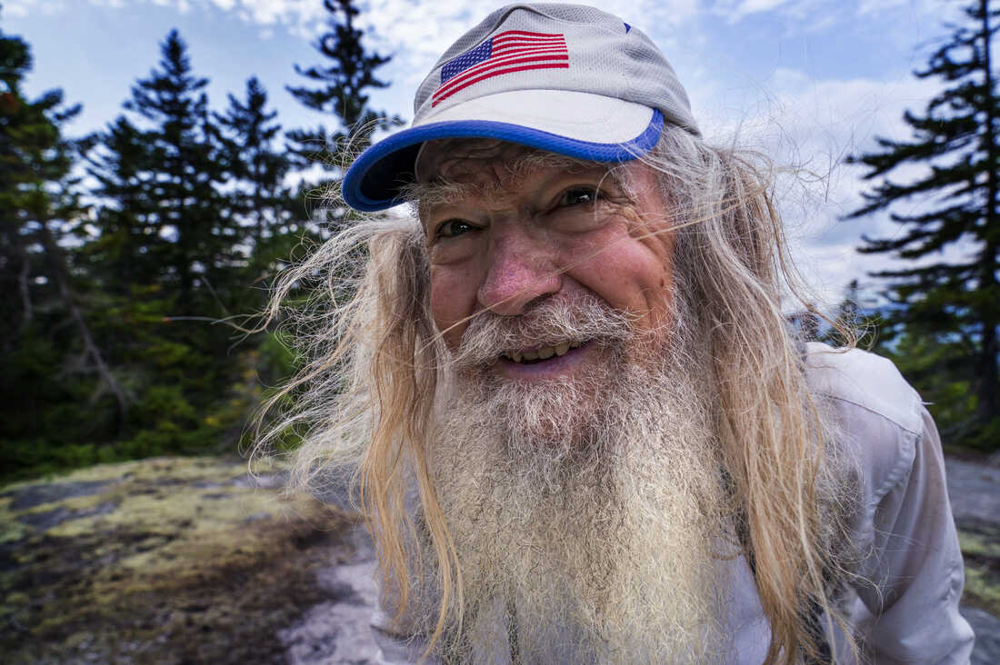
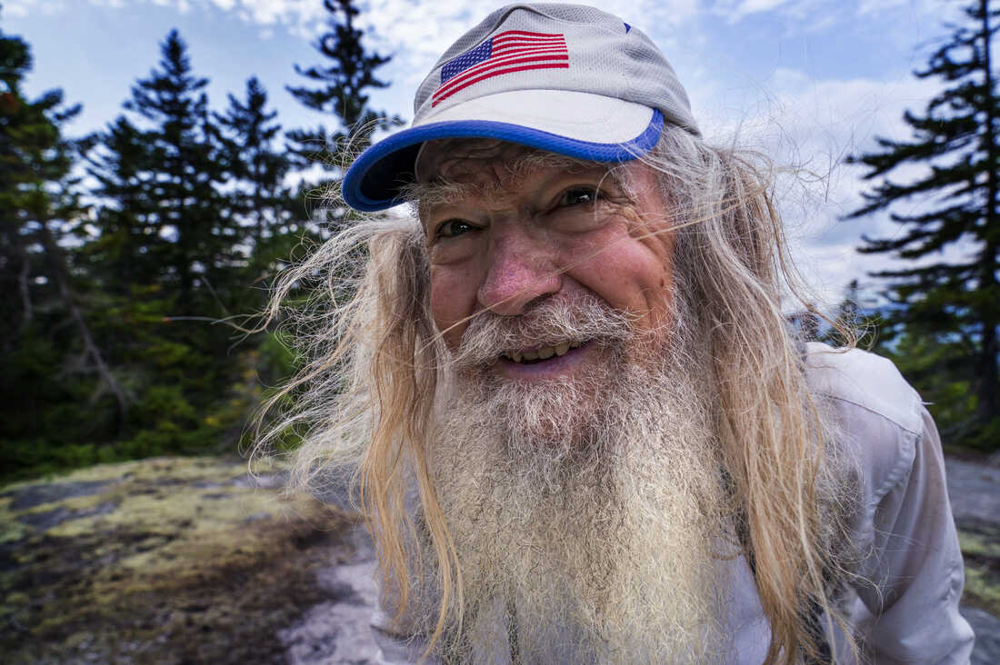

" This band is the most band ever" - Paul Polenski (Famous climber of the Appalachian Mountains)
Borys recreates the sinister atmosphere of the Appalachian trail with an instrument he constructed on Boylston Street with materials found outside of Trader Joe’s. It consists of a wooden plant with two screws and a single metal string attached at two ends. It also has a traffic cone to propagate the lush sounds of the string being played. While conquering the Appalachian trail in the winter of 2019, the instrument has been decorated with dirt and various leaves found along the way. Borys also really loves apples and the sound they make when they are bitten. They are a major inspiration to him and in his playing he does his best to channel in his Appalachian Apples.
Ruben harnesses the power of machinery to add his voice to the choir of the Appalachian. The discordant timbre of the tabletop washer/dryer combo will bring out emotions left dormant deep within. Ruben is a nature devotee, and spends his life journeying across mountains and wilderness to find inspiration. In a hiking trip during 2014 he met Paul Polenski and his advice changed the course of Ruben’s life. He now advocates for the national ban of plastic bottles and containers, which are harmful to both the environment and human physiology. Ruben has sworn off plastic water bottles and forages all of his food from the mountainside.
Joe was born to banjo. He was literally born with a banjo in his hands, it was a frightening process. From there he quickly learned to play the instrument before he could walk. At age 8 Joe moved to Compton, fed up with the banjo he sought to challenge himself by starting a freestyle rap career. His bars were whack, and Compton ate him alive. The artist then rediscovered himself after stowing away on a tanker ship for 3 months with only his banjo to survive. Utilizing his newfound modern flow his lines became easily distinguishable from most traditional bluegrass music. The adept banjoist seeks to push himself further with the new Appalachian folk industrial noise group Palachain.


 

Music of the Appalachian mountains: